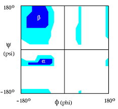

BT01018 - SIMULAÇÃO COMPUTACIONAL DE AMINOÁCIDOS E PROTEÍNAS
Davi Marcon - Agosto de 2021
Table of Contents
- AULA 1: Introdução a estrututuras de proteínas - TEÓRICA
- AULA 2: Aminoácidos - TEÓRICA
- AULA 3: Ligação peptídica - TEÓRICA
- AULA 4: Interações não covalentes - TEÓRICA
- AULA 5: Estrutura de proteínas - TEÓRICA
- AULA 6: Modelagem comparativa de Proteínas - TEÓRICA
- AULA 7 e 8: Modelagem comparativa de Proteínas parte II - TEÓRICA
- AULA 9: Acessando PDB - PRÁTICA
- AULA 10-12: Modelagem utilizando o MODELLER PRÁTICA
AULA 1: Introdução a estrututuras de proteínas - TEÓRICA
Introdução a disciplina
Enzimas são alvos terapêuticos e são estudadas por serem possíveis alvos de medicamentos
Existem Inúmeras aplicações para o uso das enzimas e ainda hoje esses estudos tem grande impacto na comunidade científica
AULA 2: Aminoácidos - TEÓRICA
A vida está intimamente ligada as proteínas e depende delas
Aminoácidos
(C) central com uma ligação ao grupo amino (-NH2) e outra ao grupo carboxila (-COOH) e a uma cadeia lateral variável
Lista de aminoácidos
| Letra | Nome do aminoácido | Abreviação com 3 letras |
|---|---|---|
| G | Glycine | Gly |
| A | Alanine | Ala |
| L | Leucine | Leu |
| M | Methionine | Met |
| F | Phenylalanine | Phe |
| W | Triptophan | Trp |
| K | Lysine | Lys |
| Q | Glutamine | Gln |
| E | Glutamic Acid | Glu |
| S | Serine | Ser |
| P | Proline | Pro |
| V | Valine | Val |
| I | Isoleucine | Ile |
| C | Cysteine | Cys |
| Y | Tirosine | Tyr |
| H | Histidine | His |
| R | Arginine | Arg |
| N | Asapragine | Asn |
| D | Aspartic Acid | Asp |
| T | Threonine | Thr |
Classificação dos aminoácidos:
- Os aminoácidos podem ser classificados de acordo com suas cadeias laterais nas seguintes classificações:
- Alifáticos, não polares
- Aromáticos
- Não Carregados, polares
- Carregados positivamente
- Carregados negativamente
| Alifáticos não polares | Aromáticos | Não carregados, polares | Carregados positivamente | Carregados negativamente |
|---|---|---|---|---|
| Glycine | Phenyalanine | Serine | Lysine | Aspartate |
| Alanine | Tyrosine | Threonine | Asginine | Glutamate |
| Valine | Tryptophan | Cysteine | Histidine | |
| Leucine | Proline | |||
| Methionine | Asparagine | |||
| Isoleucine | Glutamine |
AULA 3: Ligação peptídica - TEÓRICA
Ligação peptídica
Um tipo de ligação covalente realizada entre 2 aminoáidos
Peptideos são formados a partir de várias ligações de aminoácidos
- Dipeptideo: 2 aminoácidos
- Tripeptideo: 3 aminoácidos
- Oligopeptideos: 4-10 aminoácidos
- Popipeptideo:10-100 aminoácidos
- Poteínas: Quantidade de aminoácidos > 100
Gráfico de Ramachandran
Representa as regiões permitidas e proíbidas na confomação
- As regiões em azul são permitidas
- As regiões em branco são regiões proíbidas onde exite choque de átomos

Esse gráfico avalia a qualidade esteroquímica da proteína
AULA 4: Interações não covalentes - TEÓRICA
A ligação é energéticamente mais fraca mas é significativa para a conformação da estrutura secundária
Interações importantes
- Ligação de hidrogênio
- Interação Iônica
- Interação de van deer Waals
- Cada Átomo na interação tem a um raio específico na relação
- Interação hidrofóbica
- Ponte dissulfeto
Aminoácidos hidrofóbicos
| Alanine |
| Valine |
| Leucine |
| Isoleucine |
| Proline |
| Methionine |
| Phenyalanine |
| Triptophan |
AULA 5: Estrutura de proteínas - TEÓRICA
Estrutura Primária
A estrutura primária das proteína é somente a sequência de aminoácidos porém as estruturas secundárias e terciárias dependem do enovelamento
Esta estrutura primária é representada em arquivos FASTA
Estrutura Secundária
É formada a partir dos ângulos entre as ligações pepitidicas ( α-hélice e β-folhas )
α-Helice
Fatores que afetam a estabilidade da α-helice:
- Repulção ou atração eletroestática entre as cadeias laterais
- Volume das cadeias laterais
- Ocorrência de prolina e cisteína
β-folha
Podem ser paralelas ou anti-paralelas
Estrutura Terciária
Surgimento das alças (loops) e dobraduras
É a conformação tridimencional da proteína
Fatores importantes para a estrutura terciária:
- Cadeias laterais hidrofóbicas
- Cadeias laterais longas
Estrutura Quartenária
Formada pela interação de cadeias proteícas
AULA 6: Modelagem comparativa de Proteínas - TEÓRICA
Instalando o moddeler
- Registrar-se nesse site (use email institucional se possível)
Obter a key de registro
Instalação usando conda: (para Linux)
conda config --add channels salilab export KEY_MODELLER="(insira aqui a key obtida no registro entre)" conda install modeller
OBS: modeller é um pacote em python
Como são determinadas as estruturas de proteínas:
- Métodos experimentais:
- Cristalografia de Raio X
- Crio-microscopia eletrônica
- RMN
- Métodos teóricos:
- Homologia
- Ab-initio ou de-novo'
Modelagem comparativa utilizando homologia
Ferramenta bem sucecidad na predição de estruturas tridimencionais, se baseia na similaridade da sequeência de aminoacidos com a estrutura tridimencional observada experimentalmente Resumo dos passos para modelagem comparativa:
Resumo dos procedimentos para geração dos modelos
- Buscar proteínas homológas no PDB
- Alinhamento de sequências
- Construção de modelos
- Contrução da cadeia principal das regiões conservadas
- Modelagem das alças
- Modelo primitivo
- Otimização e validação dos modelos
AULA 7 e 8: Modelagem comparativa de Proteínas parte II - TEÓRICA
Identificação dos moldes
Utiliza-se o BLAST para encontrar os modelos mais similares
Isso é feito utilizando as matrizes de pontuação
Deve-se considerar a natureza das mutações encontradas
As matrizes mais utilizadas são PAM(Point Accepted Mutation) e BLOSUM(BLOcks SUbstitution Matrix)
O modeller usa BLOSUM-62 para redução de tempo computacional
Situações:
- Conhece-se a família a que pertence a proteína
- Não se sabe a família
No caso de não se conhecer a família o grau de identidade das proteínas model deve ser igual ou superior a 25% se o número de resíduos for superior a 80, pois a partir desse limiar existe uma grande porbabilidade de que essas proteínas tenham estruturas tridimencionais semelhantes.
Construção do modelo
Os algoritmos de construção dependem do programa utilizado
O modeller usa Modelagem pela satisfação de restrições espaciais
Validação do modelo
Avaliação dos parâmetros esteroquímicos: Utilizando o software PROCHECK
Este software produz o gráfico de ramachandram nas regiões permitidas
O parâmetros mais comum para avaliação do desvio quadrático entre duas estruturas é o RMSD que se baseia no desvio entre as estruturas atômicas
Quanto menor o RMSD melhor o resultado é
Evento chamado CASP: Critical Assessment of Techniques for Protein Structure prediction Esse evento é uma espécie de competição para avaliar as melhores técnicas de modelagem
AULA 9: Acessando PDB - PRÁTICA
Banco de dados formado a partir de métodos experimentais
"O computacional e o experimental são complementares"
Quanto menor a resolução em Angstroms maior é a qualidade do modelo
Clicar em download para fazer o download dos arquivos em .pdb
AULA 10-12: Modelagem utilizando o MODELLER PRÁTICA
Após instalar o modeller, ir em Downloads & Instalation e clicar em pdball.pir.gz para fazer o download do dataset pdb completo
Salvar o arquivo em uma pasta para acessar posteriormente
Baixar os arquivos do sigga
build_profile.pyMurD.alialign2d.py
conteúdo do arquivo:
from modeller import * log.verbose() env = environ() #-- Prepare the input files #-- Read in the sequence database sdb = sequence_db(env) sdb.read(seq_database_file='pdball.pir', seq_database_format='PIR', chains_list='ALL', minmax_db_seq_len=(30, 4000), clean_sequences=True) #-- Write the sequence database in binary form sdb.write(seq_database_file='pdball.bin', seq_database_format='BINARY', chains_list='ALL') #-- Now, read in the binary database sdb.read(seq_database_file='pdball.bin', seq_database_format='BINARY', chains_list='ALL') #-- Read in the target sequence/alignment aln = alignment(env) aln.append(file='MurD.ali', alignment_format='PIR', align_codes='ALL') #-- Convert the input sequence/alignment into # profile format prf = aln.to_profile() #-- Scan sequence database to pick up homologous sequences prf.build(sdb, matrix_offset=-450, rr_file='${LIB}/blosum62.sim.mat', gap_penalties_1d=(-500, -50), n_prof_iterations=1, check_profile=False, max_aln_evalue=0.01) #-- Write out the profile in text format prf.write(file='build_profile.prf', profile_format='TEXT') #-- Convert the profile back to alignment format aln = prf.to_alignment() #-- Write out the alignment file aln.write(file='build_profile.ali', alignment_format='PIR')
Abrir a pasta onde os arquivos estão e executar o comando
mod9.19 build_profile.py
Verificar se o programa funcionou
Após a execução será criado um arquivo chamado build_profile
Os potenciais homologos são representados em linha seguindo o padrão > PDB_ID … O evalue deve ser menor que 0.02
Escolher os 4 homlógos se baseando na identidade e no evalue e a melhor resolução (utilizar o id para fazer esta verificação no site do PDB)
O template escolhido pelo professor foi o 2y1o e ele sugeriu que a classe escolhesse mais 2 e fizesse a análise
Fazer o download dos templates escolhidos e construir modelos diferentes utilizando o script align2d.py
Conteúdo do script:
from modeller import * env = environ() aln = alignment(env) mdl = model(env, file='2y1o', model_segment=('FIRST:A','LAST:A')) aln.append_model(mdl, align_codes='2y1oA', atom_files='2y1o.pdb') aln.append(file='MurD.ali', align_codes='MurD') aln.align2d() aln.write(file='MurD-2y1o.ali', alignment_format='PIR') aln.write(file='MurD-2y1o.pap', alignment_format='PAP')
Abrir o terminal aonde a sequência está e executar o seguinte comando:
mod9.19 align_2d.py